Autoregressive Video Diffusion Models
Introduction
自回归生成 目前开源的视频生成基座模型大多是全序列扩散模型（简称作 FS-Diffusion），即将视频视为“三维图像”，一次性产生固定时长的视频。例如，Wan2.1 / Wan2.2 一次性生成 21 个 latent，对应 81 帧，在 16 fps 下为 5s. 然而，视频本质是图像沿时间轴的展开，其时间维度应可无限流式生成，因此全序列扩散的处理方式并不自然。更自然的做法是沿时间轴作自回归生成，即 AR-Diffusion. 具体而言，记 \(\{\mathbf x^1,\mathbf x^2,\ldots,\mathbf x^N\}\) 表示 \(N\) 个视频帧（一帧可以是一个 latent 或多个 latent 组成的 chunk），那么整段视频的联合分布可自回归式地拆解为： \[ p_\theta(\mathbf x^{1:N})=p(\mathbf x^1)\prod_{i=2}^Np(\mathbf x^i\vert\mathbf x^{<i}) \] 其中每一个子项 \(p(\mathbf x^i\vert\mathbf x^{<i})\) 依旧由扩散模型建模。
注意力机制 FS-Diffusion 多采用双向注意力，序列中各帧可以看到所有的历史和未来帧；而 AR-Diffusion 多采用因果注意力，每一帧只能看到历史帧。需要注意的是，是否自回归与是否采用因果注意力是独立的——双向注意力也可以实现自回归生成。不过，采用因果注意力实现自回归生成有两个好处：1）训练时可 Teacher Forcing 并行化训练，提高效率；2）推理时可使用 KV-cache 减少时延。因此自回归生成往往与因果注意力绑定。
训练策略 从头训练一个 AR-Diffusion 视频模型所需要的代价太大，因此学术界常常选择将开源的预训练 FS-Diffusion (e.g., Wan2.1 / Wan2.2 / HunyuanVideo1.5) 微调为 AR-Diffusion. 同时，为了减少推理时延，这样的工作往往也会采用扩散模型蒸馏方法（见这篇文章）将采样步数减少到 1-4 步，从而实现实时自回归视频生成。
CausVid
简要介绍 CausVid 是最早考虑到把双向全序列扩散模型（教师模型）训练成因果自回归扩散模型（学生模型）的工作。其训练过程包含两个阶段：ODE Distillation 阶段用双向教师模型产生的 ODE 轨迹对因果学生模型进行初始化，Asymmetric DMD 阶段用双向教师模型去蒸馏少步因果学生模型。
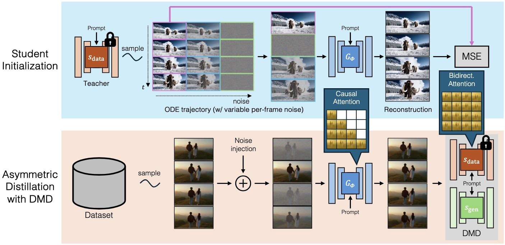
ODE Distillation 由于 DMD 蒸馏算法需要学生模型具备初步的少步生成能力，因此首先需要对学生模型进行初始化。CausVid 直接让学生去回归教师模型的 ODE 轨迹。具体而言，首先用双向教师模型产生若干（例如 1000 条）全序列的 ODE 轨迹 \(\{\mathbf x_{0:T}^i\}_{i=1}^N\) 作为初始化数据集，然后对第 \(i\) 帧随机选取时间步 \(t_i\) 作为学生模型的输入，使其回归干净帧： \[ \mathcal L_\text{init}(\phi)=\mathbb E_{\mathbf x,\{t^i\}}\left[\left\Vert G_\phi\left(\{\mathbf x_{t^i}^i\}_{i=1}^N,\{t^i\}_{i=1}^N\right)-\{\mathbf x_0^i\}_{i=1}^N\right\Vert^2\right] \] 由此学生模型初步具备了从任意时间步带噪帧 \(\{\mathbf x_{t^i}^i\}_{i=1}^N\) 预测干净帧 \(\{\mathbf x_0^i\}_{i=1}^N\) 的能力。
Asymmetric DMD 此阶段使用 DMD 将学生模型蒸馏为少步模型，其中 asymmetric 表示教师采用双向注意力，学生采用因果注意力。具体而言，对采样的真实数据，参考 Diffusion Forcing 向各帧加不同程度的噪声给到学生模型，得到学生模型生成的视频结果。该结果重新加噪后分别给到教师 score 模型和学生 score 模型计算 score 的差异，作为梯度反传回学生模型。 \[ \nabla_\phi\mathcal L_\text{DMD}(\phi)=-\mathbb E_{\mathbf x,\{t^i\},t}\left[\left(\mathbf s_\text{teacher}\left(\Psi(\hat{\mathbf x}_0,t),t\right)-\mathbf s_\text{student}(\Psi(\hat{\mathbf x}_0,t),t)\right)\frac{\mathrm d\hat{\mathbf x}_0}{\mathrm d\phi}\right] \] 其中 \(\hat{\mathbf x}_0=G_\phi(\{\mathbf x_{t^i}^i\},\{t^i\})\) 为学生模型生成的结果，\(\Psi(\cdot,t)\) 表示扩散模型的前向加噪过程。
Self Forcing
研究动机 自回归生成面临误差累积的挑战：模型在训练时始终以真实帧作为条件，但推理时是以自身生成的帧为条件，形成 exposure bias，于是生成过程的误差将被不断放大，导致视频质量越来越崩。为了解决这个问题，Self Forcing 提出在训练时就用模型自身 rollout 的视频作为条件，从而消除 exposure bias.
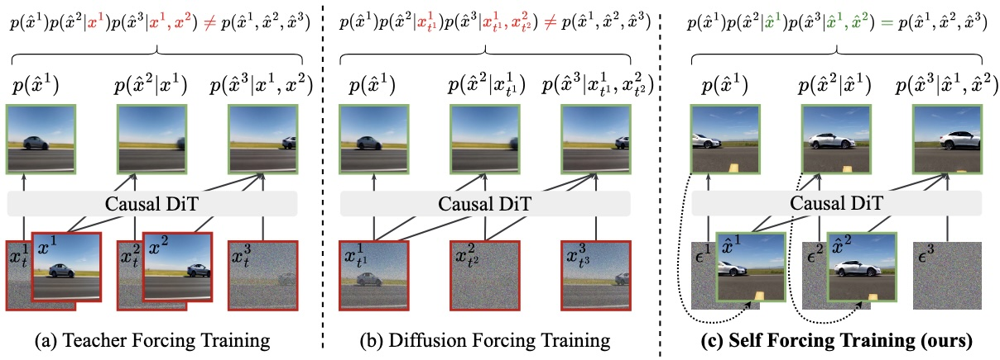
Self-Rollout 训练时，对 \(N\) 个视频帧依次随机采样生成步数 \(s\in[1,T]\)，从噪声开始通过「预测干净帧 → 重新加噪」的方式做 \(s\) 步迭代生成，其中前 \(s-1\) 步不做梯度传播。前一帧生成完毕后先更新 KV-cache，再生成下一帧，两帧之间也不进行梯度传播。换句话说，梯度传播仅限制在每一帧的最后一个去噪步的计算上，这样能够避免迭代生成导致的梯度计算开销过大问题。
训练流程 Self Forcing 的训练与 CausVid 类似，首先进行 ODE Distillation 对少步因果学生模型做初始化，然后在学生模型 self-rollout 生成的视频上做分布匹配。理论上，分布匹配采用 DMD, SiD 或者 GANs 都是可以的；特别地，DMD 或 SiD 并不需要用到真实数据集。
推理 Rolling KV-cache 在推理时，AR-Diffusion 可以不断扩展生成视频的长度，但为了保持参与计算的 token 数量仍然在训练见过的范围内，需要不断地丢弃最早的 KV-cache. 理论上，每次丢弃 KV-cache 后，后面的 KV-cache 都要重新计算才符合训练的设定，但这样做无疑增加了计算成本。Self Forcing 则直接丢弃早期 KV-cache 并不重新计算，并在训练时通过设置 attention mask 模拟这一情形，以避免训练和测试产生 mismatch.
APT2 (AAPT)
简要介绍 APT2 是 Self Forcing 的同期工作，通过对抗训练实现了单步自回归视频生成，同时提出了 Student Forcing 减少误差累积。
训练流程 APT2 采取三阶段的训练流程：
- AR Adaptation：通过 Teacher Forcing 将预训练视频生成模型从双向架构微调为因果架构；
- Consistency Distillation：将因果模型蒸馏为少步模型，作为后续对抗训练的初始化；
- Adversarial Training + Student Forcing：引入判别器做对抗训练，且只有第一帧采用真实帧，后续帧均由学生模型自己生成。
对抗训练 APT2 的判别器采用与生成器相同的架构，逐帧输出判别 logit. 对抗损失采用 relativistic loss，并采用了数值近似的 R1 和 R2 正则化（因为 FSDP, gradient checkpointing, FlashAttention 等技术不支持高阶梯度，所以只能数值近似）。
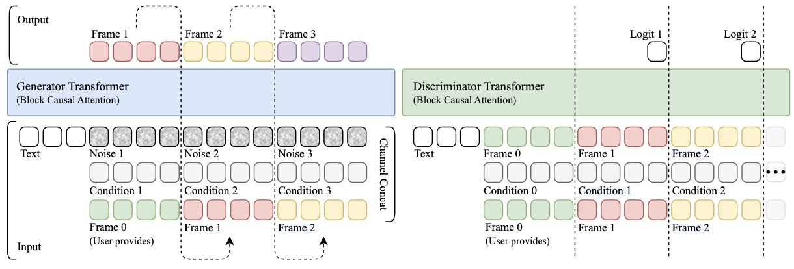
长视频训练 视频数据集往往缺乏 30-60s 的长视频，因此难以通过 Teacher Forcing 增强模型的长视频生成能力。不过，Student Forcing 正好支持长视频训练：首先让单步学生模型生成 60s 的长视频，然后将其切分为 10s 的片段给判别器验证，片段之间保持 1s 的重叠。为了减少显存开销，学生模型每次仅生成一个片段用于梯度计算，生成下一个片段时利用上一次存储的 KV-cache，相当于在视频时间维度上做了梯度累积。
LongLive
简要介绍 LongLive 关注长视频生成中视频质量下降和切换 prompt 的问题，提出三点改进：KV recache，streaming long tuning, short-window attention + frame sink.
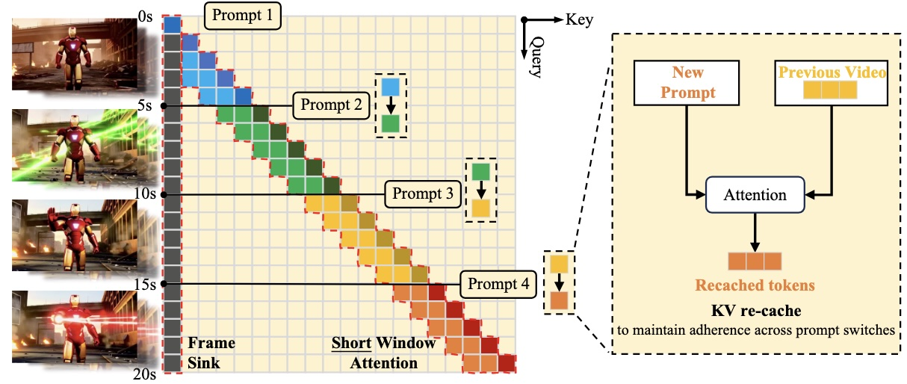
KV Recache AR-Diffusion 面临切换 prompt 的问题：如果保留以前的 KV-cache，那么这些 cache 中存在的以前的 prompt 信息会影响模型对新的 prompt 的响应；如果丢弃以前的 KV-cache，模型会失去对以前内容的记忆，导致人物不一致性等问题。为了解决这个问题，作者提出 KV recache，即在切换 prompt 时根据已经生成的视频帧和新的 prompt 重新计算 KV-cache，从而既编码了新的 prompt，又保留了视觉内容。KV recache 技术在训练和推理时都会使用，训练时保证每条训练样本只有一次 prompt 切换，因此只增加 6% 的额外成本；推理时模型可进行多次 prompt 切换。
Streaming Long Tuning 作者认为长视频训练是必要的，但是会遇到两个问题：教师只在短视频上训练过，以及在长序列上梯度传播会 OOM. 为此，作者提出流式训练方案：学生模型先生成一段短视频片段，用 DMD 训练；然后基于这段短片段继续生成下一个短片段，再次用 DMD 训练。反复这个过程直到一个预设的长度，换新的 batch 重新开始。
Short-window Attention + Frame Sink 生成长视频时 attention window 越大，画面质量越高，但计算量也越大。为此，作者采用较小的 attention window，但保留第一帧作为 attention sink 提供一个全局锚点。
Rolling Forcing
简要介绍 尽管上文方法（CausVid, Self Forcing 等）将 FS-Diffusion 改造成了 AR-Diffusion，具备了理论上的无限流式生成能力，但实际使用时一旦过于超出了训练的长度（一般是 5s），视频仍然会受到严重的误差累积问题导致质量劣化。为减少长视频生成中的误差累积，Rolling Forcing 提出三个技术：1）联合去噪多帧，各帧加噪强度逐个增加；2）引入 attention sink，即始终保持首帧的 KV-cache 作为全局锚点；3）在 window 上做少步蒸馏。
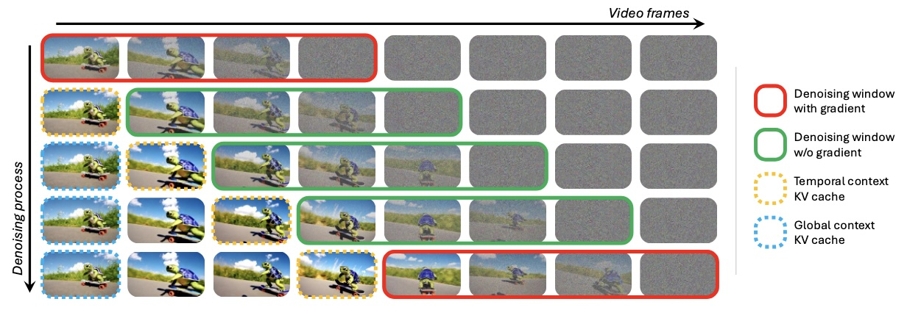
Rolling Window Rolling Forcing 放松了 causal 的要求，允许模型通过双向注意力同时对一个 window 内的多个帧进行去噪，这些帧的噪声程度逐个增加。Window 的长度与去噪步数相同，这样每个 roll 中正好有一个帧完成去噪移出 window，一个噪声帧进入 window. 注意，这里的每一步去噪的含义与 Self Forcing 相同，指「预测干净帧 → 重新加噪」的过程。
History Context Rolling Forcing 模型在某一时刻处理的 token 可分为三类：1）attention sink，始终保留前 \(L_\text{glo}\) 个 token 的 KV-cache 作为全局参考（图中蓝色部分）；2）最近生成的 \(L_\text{tem}\) 个 token 作为近期历史（图中黄色部分）；3）当前 window 内正在去噪的 \(L_\text{win}\) 个 token（图中绿色部分）。保证三类 token 数加起来等于双向教师模型的 context 长度。这里有一个需要注意的点：attention sink 保留的是施加 RoPE 之前的 KV，而 RoPE 每次都按照它们正好处于当前可见部分之前的假设重新计算，如此避免模型的位置编码不连续。
DMD 对于模型 rollout 出的长视频，Rolling Forcing 选取不重叠的 window 拼在一起作为学生生成的视频去做 DMD 训练（例如上图中两个红框部分）。于是，对于 \(N\) 帧的视频，若设 window 长度为 \(T\)，则有 \(\lceil N/T\rceil\) 次前向传播需要计算梯度，相比从每个 window 中各取一帧拼起来的做法节约了显存开销。不过，由于一个 window 内噪声程度不一，各帧的去噪质量也参差不齐，导致蒸馏效果不佳。为此，作者最终采取 Self Forcing 和 Rolling Forcing 以相同概率交替的方式训练。
Self-Forcing++
简要介绍 Self-Forcing++ 同样也是为了解决长视频生成中的误差累积问题。作者认为其原因是模型的训练和推理存在两个不一致：1）temporal mismatch：模型只在 5s 上训练，却在更长时间上推理；2）supervision misalignment：模型训练时从未见过长时 rollout 上出现的累积错误。为了解决上述问题，Self-Forcing++ 提出让学生模型先 rollout 存在累积误差的长视频，再从中截取短片段做 DMD 消除误差，使得训练和推理的视频长度相匹配。
Extended DMD 具体而言，设学生 rollout 的视频为 \(\{\mathbf x^i\}_{i=1}^N\)，则： \[ \nabla_\phi\mathcal L_\text{DMD}(\phi)=-\mathbb E_{\mathbf x,t,i}\left[\left(\mathbf s_\text{teacher}\left(\Psi({\mathbf x}^{i:i+K-1},t),t\right)-\mathbf s_\text{student}(\Psi({\mathbf x}^{i:i+K-1},t),t)\right)\frac{\mathrm d{\mathbf x}^{i:i+K-1}}{\mathrm d\phi}\right] \] 其中 \(i\sim\text{Unif}\{0,\ldots,N-K\}\) 为裁剪短片段的起始点，\(K\) 为裁剪窗口长度。学生模型 rollout 的时候可以采用 rolling KV-cache 技巧，从而确保训练和推理的一致。
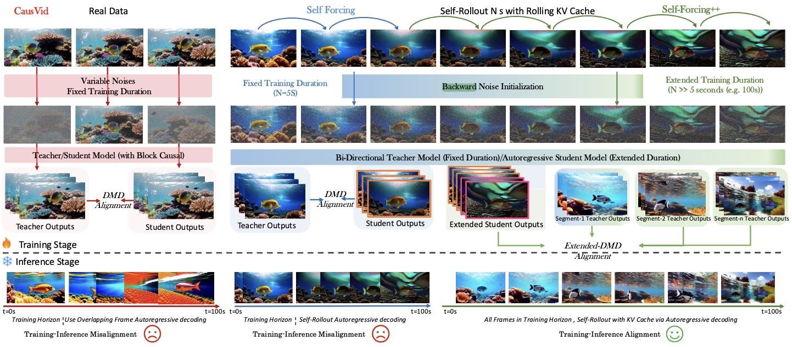
GRPO 为了进一步鼓励长程平滑性，作者使用连续帧光流的相对大小作为 reward，进行 GRPO 训练： \[ \mathcal J(\theta)=\mathbb E_{\{o_i\}_{i=1}^G\sim\pi_{\theta_\text{old}}(\cdot\vert s_{t,i})}\mathbb E_{a_{t,i}\sim\pi_{\theta_\text{old}}(\cdot\vert s_{t,i})}\left[\frac{1}{G}\sum_{i=1}^G\frac{1}{T}\sum_{t=1}^T\min(\rho_{t,i}A_i,\text{clip}(\rho_{t,i},1-\epsilon,1+\epsilon)A_i)\right] \] 其中 \(G\) 为组大小，\(\rho_{t,i}=\frac{\pi_{\theta}(a_{t,i}\vert s_{t,i})}{\pi_{\theta_\text{old}}(a_{t,i}\vert s_{t,i})}\) 为重要性采样权重，\(A_i=\frac{r_i-\text{mean}(\{r_1,r_2,\ldots,r_G\})}{\text{std}(\{r_1,r_2,\ldots,r_G\})}\) 为 advantage.
Causal Forcing
研究动机 CausVid 和 Self Forcing 都采取了两阶段的训练范式：
- ODE Distillation：用双向教师 ODE 轨迹对因果学生模型做初始化。这一步的目的有两个，一是将网络架构从双向改为因果，二是让学生模型具备初步的少步生成能力，为下一步的 DMD 做铺垫。
- Asymmetric DMD：让少步因果学生模型生成的视频在分布层面上匹配双向教师。CausVid 在这一步采取 Diffusion Forcing 的设置，而 Self Forcing 进一步采取 self-rollout 的方式解决 exposure bias.
Causal Forcing 指出，上述范式的第一个阶段存在理论上的错误：ODE Distillation 要求 noise 和 data 之间形成单射，但学生因果架构和教师双向架构之间的差异会导致 frame-level 不是单射，进而导致学生只能学习模糊的条件期望，影响生成质量。
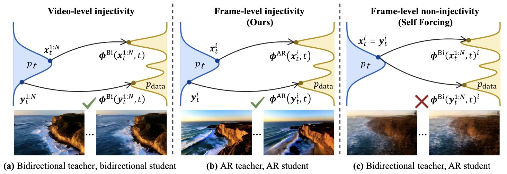
详细解释 考虑如下三个 \(N\) 帧的初始噪声： \[ \begin{gather} (\mathbf n^1,\ldots,\mathbf n^i,\mathbf n^{i+1},\ldots,\mathbf n^N)\\ (\mathbf n^1,\ldots,\mathbf n^i,\bar{\mathbf n}^{i+1},\ldots,\bar{\mathbf n}^N)\\ (\mathbf n^1,\ldots,\mathbf n^i,\tilde{\mathbf n}^{i+1},\ldots,\tilde{\mathbf n}^N) \end{gather} \] 它们前 \(i\) 帧完全相同，后 \(N-i\) 帧不同（用符号 \(\mathbf n,\bar{\mathbf n},\tilde{\mathbf n}\) 区分）。由于教师模型的双向架构会让未来影响过去，因此教师模型在这三个初始噪声下产生的视频的所有帧都将完全不同： \[ \begin{gather} (\mathbf n^1,\ldots,\mathbf n^i,\mathbf n^{i+1},\ldots,\mathbf n^N)\xrightarrow{\text{Teacher ODE}}(\mathbf x^1,\ldots,\mathbf x^i,\mathbf x^{i+1},\ldots,\mathbf x^N)\\ (\mathbf n^1,\ldots,\mathbf n^i,\bar{\mathbf n}^{i+1},\ldots,\bar{\mathbf n}^N)\xrightarrow{\text{Teacher ODE}}(\bar{\mathbf x}^1,\ldots,\bar{\mathbf x}^i,\bar{\mathbf x}^{i+1},\ldots,\bar{\mathbf x}^N)\\ (\mathbf n^1,\ldots,\mathbf n^i,\tilde{\mathbf n}^{i+1},\ldots,\tilde{\mathbf n}^N)\xrightarrow{\text{Teacher ODE}}(\tilde{\mathbf x}^1,\ldots,\tilde{\mathbf x}^i,\tilde{\mathbf x}^{i+1},\ldots,\tilde{\mathbf x}^N) \end{gather} \] 然而，学生模型的因果架构中未来不会影响过去，于是对于前 \(i\) 帧，学生的回归目标不再保持单射： \[ (\mathbf n^1,\ldots,\mathbf n^i)\xrightarrow{\text{Student Target}} \begin{cases} (\mathbf x^1,\ldots,\mathbf x^i)\\ (\bar{\mathbf x}^1,\ldots,\bar{\mathbf x}^i)\\ (\tilde{\mathbf x}^1,\ldots,\tilde{\mathbf x}^i) \end{cases} \] 那么学生最终学习到的只能是所有可能目标的平均值。
Causal Forcing 要解决上述问题，只需要将教师也改为因果架构即可，于是 Causal Forcing 提出了三阶段的训练范式：
- AR Adaptation：通过 Teacher Forcing 将教师模型从双向架构微调成因果架构，数据合成自双向教师模型；
- ODE Distillation：用多步因果教师模型生成 noise-data pairs 初始化因果学生模型；
- Asymmetric DMD with self rollout：依照 Self Forcing 在学生模型生成的视频上用双向教师模型做分布匹配。
Causal Forcing++ 上述三阶段训练范式中，ODE Distillation 完全可以用其他更先进的基于 ODE 轨迹的扩散模型蒸馏方法代替，例如 Consistency Distillation，如此可避免 ODE Distillation 昂贵的数据生成过程，使得训练流程更加 scalable. 可以看见，Causal Forcing++ 的前两个阶段与 APT2 如出一辙，而二者在第三个阶段的区别在于选取了不同的分布匹配方式 (GAN vs DMD).
Context Forcing
简要介绍 前文中关注长视频生成的若干工作，例如 Rolling Forcing, Self-Forcing++ 等，都采取了用短视频教师蒸馏长视频学生的方案。Context Forcing 认为短视频教师终究没有能力评估学生生成的整个长视频，因此希望用长视频教师蒸馏长视频学生。为了获取长视频教师，作者提出了 Slow-Fast Memory 架构，使得教师可以处理分钟级的长视频。
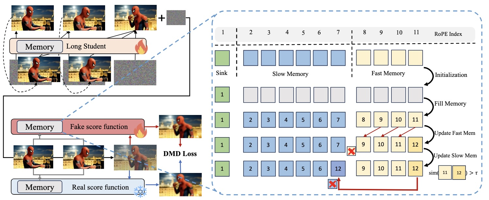
KL 分解 对于长度为 \(N\) 的长视频，我们希望优化： \[ \mathcal L_\text{global}=\text{KL}\left(p_\text{student}(\mathbf x^{1:N})\,\|\, p_\text{teacher}(\mathbf x^{1:N})\right) \] 根据 KL 散度的链式法则，有如下分解： \[ \mathcal L_\text{global}= \underbrace{\text{KL}\left(p_\text{student}(\mathbf x^{1:k})\,\|\, p_\text{teacher}(\mathbf x^{1:k})\right)}_{\mathcal L_\text{local}}+ \underbrace{\mathbb E_{\mathbf x^{1:k}\sim p_\text{student}}\left[\text{KL}\left(p_\text{student}(\mathbf x^{k+1:N}\vert \mathbf x^{1:k})\,\|\, p_\text{teacher}(\mathbf x^{k+1:N}\vert \mathbf x^{1:k})\right)\right]}_{\mathcal L_\text{context}} \] 于是，Context Forcing 采用两阶段的流程训练学生模型：
- 阶段一优化 \(\mathcal L_\text{local}\)，即在长度为 \(k\) 的短视频上做 DMD，其中 \(k\) 取 1~5s；
- 阶段二优化 \(\mathcal L_\text{context}\)，即基于学生 rollout 的视频作为前序条件，在后续长视频上做 DMD，其中前序视频长度随训练进行逐渐增加。特别地，对于 \(\mathbf x^{k+1:N}\) 作者遵循 Self Forcing 的设定，随机选取去噪步数；对于 \(\mathbf x^{1:k}\) 则将其完全去噪，以对齐教师模型的训练。
Slow-Fast Memory 教师和学生模型都采用 causal 架构，其中 \(\mathbf x^{1:k}\) 作为 context 部分保存在 KV-cache 中。作者将 KV-cache 分为了三个部分 \(\mathcal M=\mathcal S\cup\mathcal C_\text{slow}\cup\mathcal C_\text{fast}\)：
- Attention Sink (\(\mathcal S\))：始终保留前 \(N_s\) 个 token；
- Slow Memory (\(\mathcal C_\text{slow}\))：大小为 \(N_c\) 的队列，保存重要帧，仅在有重要新信息时更新；
- Fast Memory (\(\mathcal C_\text{fast}\))：大小为 \(N_l\) 的 FIFO 队列，随时更新。
为了定义帧的重要性，作者对比当前 token 与前一个 token 的 key vectors 之间的相似度。若相似度低于阈值，则说明当前 token 包含重要的新信息，需要加入 slow memory.
教师训练 教师模型在长视频数据集上采用 ERFT 的方式训练，即随机给干净 context \(\mathbf x^{1:k}\) 注入扰动使其对学生模型的错误更加 robust.
MMM
本文虽然不是 causal 模型，但其解决的长视频生成问题也是 AR-Diffusion 所面临的问题，并且其结合 forward 和 reverse KL 的做法也值得参考和学习。
简要介绍 我们有丰富且高质量的短视频数据，但缺乏长视频数据。为了训练长视频生成模型，MMM 提出同时训练两个目标：在长视频上用 flow matching 训练总体的叙事结构，同时对短视频片段做 DMD 蒸馏提升视频质量。其中，flow matching 的 MSE loss 是 mean seeking，DMD 对应的 reverse KL 是 mode seeking，因此文章叫做 "mode seeking meets mean seeking".
模型架构 模型采用 DDT 架构，即一个共享的 encoder 上连接两个轻量级 head. 训练时，每次梯度更新用两个 minibatches：1）DM head 自己产生长视频，通过滑动窗口截取短片段做 DMD；2）FM head 按正常的 flow matching 在长视频数据集上预测速度场。两个目标共同优化共享的 encoder 部分。推理时，丢弃 FM head，直接用 DM head 生成长视频即可。
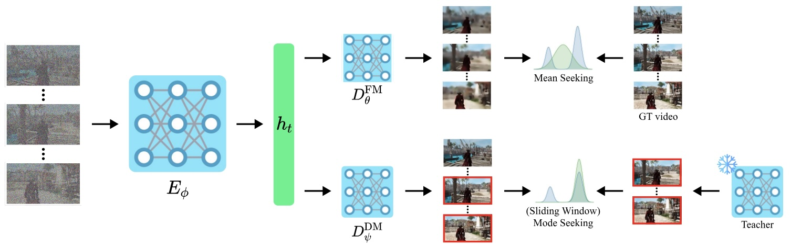
片段截取小细节 常见视频生成模型的 VAE 会将第一帧单独压缩，其统计特性与后续帧不同。因此，如果直接从一段视频 latent 中间截取一小段，由于特殊的第一帧的缺失，解码器将无法正确的重构这一段 latent 对应的视频。然而在 MMM 中，我们需要滑动窗口截取短视频 latent 去做 DMD. 因此，对于从位置 \(p>0\) 开始的任意窗口，作者将 \([0,\ldots,p-1]\) 的 latent 解码回视频，取最后一帧重新编码成 latent，再与原窗口拼接，从而产生“正确”的 latent 片段。
AnyFlow
简要介绍 前文方法多采用 ODE Distillation 或 Consistency Distillation 进行步数蒸馏，AnyFlow 引入更先进的 Flow Map（例如 MeanFlow 等）。训练包含两个阶段：1. Flow Map Training：将多步扩散模型微调为 Flow Map 模型；2. On-Policy Distillation：在自身 rollout 的视频上做 DMD 蒸馏以减少误差累积。
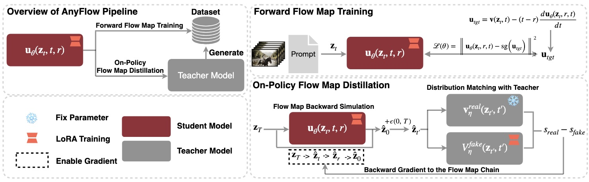
Flow Map Training 采用 MeanFlow 的训练目标。为了适配视频生成模型，作者进行了一些设计和超参数搜索，此处不赘述。
On-Policy Distillation 同 Self Forcing 一样，在自身 rollout 的视频上做 DMD 蒸馏需要解决梯度计算开销的问题。与 Consistency Models 系列「预测干净帧 → 重新加噪」的少步采样方式不同，Flow Map 模型的少步采样方式是沿着 ODE 轨迹以较大步长顺序采样。具体而言，假设我们希望进行 \(N\) 步采样，则模型将顺序前向传播 \(N\) 次，此时直接反向传播计算梯度的代价是不可承受的。为了解决这个问题，作者随机采样时间步 \(t\)，取 \(r=t-T/N\)，于是整个 ODE 轨迹被分为了三段：\(T\to t,t\to r,r\to 0\). 梯度沿着该链条传播，则无论 \(N\) 是多少，其计算开销都是相同的。由于 \(t\) 的随机性，任意长为 \(T/N\) 的小段都会被训练到，因此推理时正常进行 \(N\) 步采样即可。
Self Gradient Forcing
简要介绍 回顾在 Self Forcing 中，为了减少计算开销，梯度传播被限制在了每帧的最后一个去噪步的计算上，且帧与帧之间 detach 了。这样做模型虽然能够学习如何读取自身生成的历史帧，却无法学习如何更好地写入帧。为了解决这个问题，Self Gradient Forcing (SGF) 提出 two-pass 训练策略。作者发现尽管 SGF 只在 5s 短视频上训练，却能很好地外插到分钟级的长视频而不降低质量，这是 Self Forcing 不能做到的。
Two-pass 等价视角 Self Forcing 的训练流程等价于如下的 two-pass 视角：pass-1 在全程 no-grad 下 rollout 一段干净视频，同时记录下每帧的最后一个去噪步的带噪帧，不保留 KV-cache；pass-2 将带噪帧拼接在生成的干净帧后，重新复现去噪的计算，从而得到梯度——这与 checkpointing 的思想非常类似。Self Forcing 的 detach 操作等价于在重新计算梯度时，只对带噪帧开启梯度；而 SGF 只需做一个简单的改动，即在重计算时对干净和带噪帧都开启梯度，那么就可以让梯度顺利传播到干净帧的 KV 计算上。
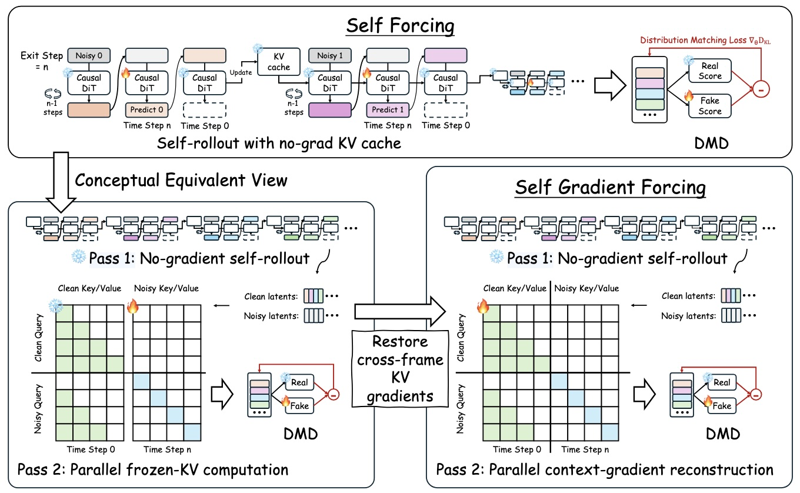